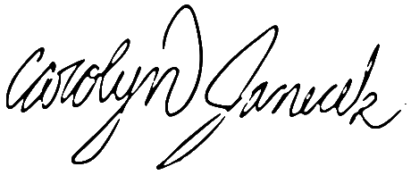

Table of Contents
Letter from the Editor
Dear Reader,
The magazine you are reading is the threshold to the next century of West Winds. Within these pages are the aspirations, struggles, and passions of West High’s students; immortalized in whatever capacity our little magazine can offer, we leave behind a snapshot of our lives for future generations.
As editor-in-chief, I am only the facilitator of my dedicated staff; this magazine could not have gone to print without them. Many younger students joined our staff this year and every day they amaze me with their talents and love for the magazine. I see each of them becoming editors and mentors in the coming years, after I leave West High.

Last year’s issue was “Legacies” a tribute to the history of our publication and the generations before us. This year, I chose the theme “Resolve” because before any one of us takes the first bold step into the future, we have to make a conscious decision to commit ourselves to the challenges we will face. Before the author writes the first sentence of a novel or an artist makes the first mark on the canvas, each must first find the resolve within them to finish the project.
This is why the cover art features one of my favorite, fictional heroines: Janie Starks from Their Eyes Were Watching God by Zora Neale Hurston. Janie grows up believing enlightenment is to be found in love and chases after this ideal, only to find herself trapped in an abusive marriage. Her realization of the harsh realities of life do not destroy her faith though, enlightenment is still to be found in love, as Janie finds the strength to love and place faith in herself. When we are young, we struggle with self-esteem and trying to imagine a place for ourselves on this vast Earth. I want West Winds to be the starting point here at West High, to tell students their art matters, their experiences are valid, and that we are here to commemorate their first, uncertain steps once they have gone on to experience life outside of high school.
I have seen this magazine do so much for so many people. We have met our best friends in this club, we have found the confidence to display our work to the world, and have felt the reward of producing this evidence of our resolve you are holding in your hands right now.
Best of luck,

Carolyn Eugenia Janecek, Editor-in-Chief 2015